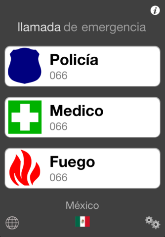
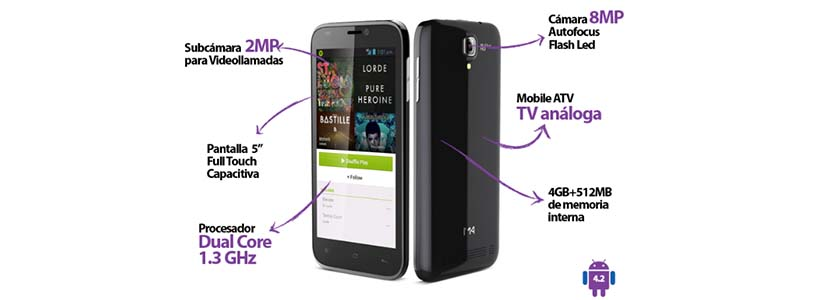
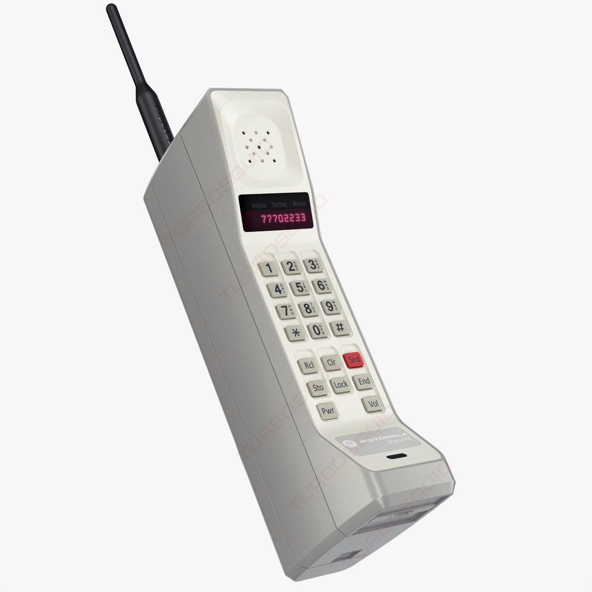
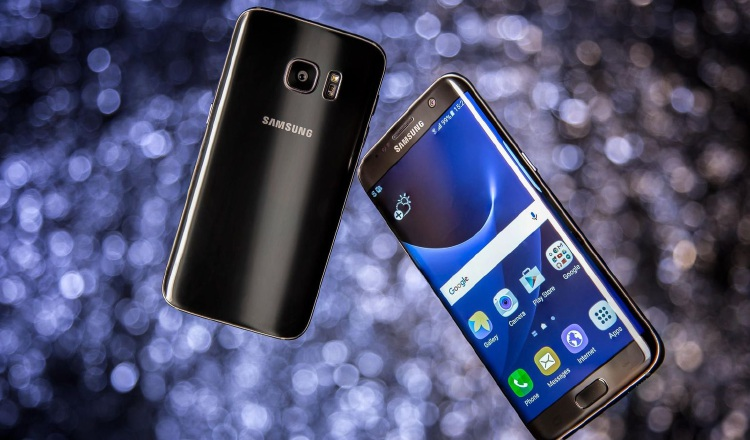
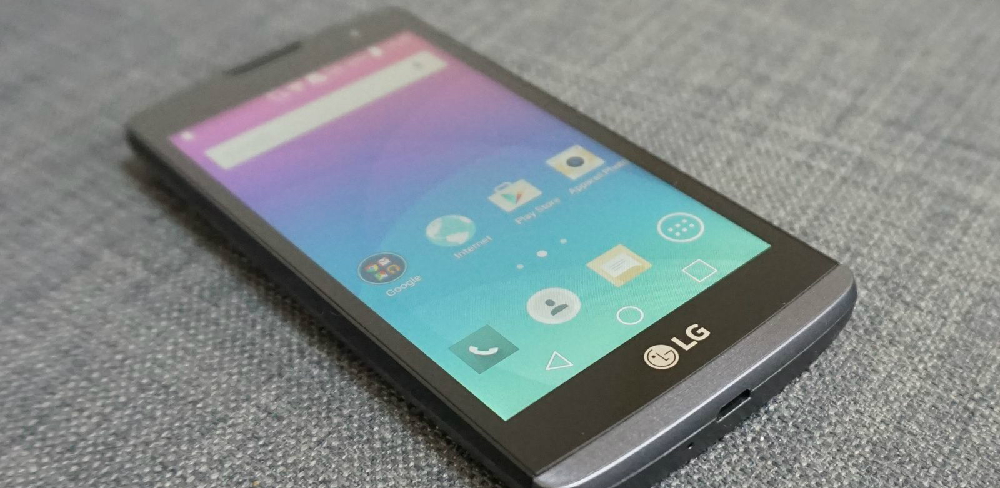

Telefonia Celular
Celular: Iphone 7 Plus
Es es un celular de Gama alta

Los Telefonos celulares fueron inventados con el proposito de que la gente pueda estar comunicada a travez de la voz, aparte de tener una facil transladación ya que lo podras llevar en la cartera, en el bolso, incluso en los bolsillos del pantalón o pollera, los seres humanos que formamos parte de esta comunidad conectada celularmente podemos llevar con nosotros y a cualquier lado este tipo de teléfono porque no pesan casi nada.
Algunas funciones extra que fueron colocadas al telefono celular fueron las de poder reproducir musica, tomar fotos, grabar videos, entrar a redes sociales entre otras cosas.
Los Teléfonos moviles son usado para una variedad de cosas, una de ellas podria ser que puedan permanecer en contacto lo miembros de la familia, conducir un negocio y el principal motivo que puedan tener forma de hacer llamadas de emergencia.
Todos los teléfonos celulares tienen una variedad de caracteristicas en común, aunque los fabricantes buscan que no todos seas iguales y asi ellos puedan colocar algunas funciones extras para poder llamar la atención de los consumidores.
Ejemplo de algunas caracteriscas de celulares:
La historia comienzaa principios del siglo XX cuando el inventor finlandés Eric Tigerstedt presentó una patente para el telefono plegable de bolsillo con un microfono de carbono muy delgado. El celular realmente fue acelerado a su invencion cuando comenzó la Seguna Guerra Múndial. En ese tiempo se utilizaba la red 0G (Generación Cero), tales como el del sistema beel, estos sistemas no eran celulares, solo soportaban alguna llamadas simultáneas, aparte de tener un alto precio.
El primer celular en crearce fue el Motorola dynaTAC 8000x,que fue creado en el año 1983 y puesto a la venta el 13 de Marzo del mismo año, su peso aproximado fue de 800 gramos, cuando el celular fue lanzado a la venta costaba 3995 dolares y la bateria solo duraba una hora en funcionamiento
El primer celular fue creado por la compania de motorola en el cual su diseño estaba muy grande y pesado para ser celular de bolsillo, aunque al ser el primer celular estaban encantados por lo que habian hecho.
la primera señal o sistema de comunicaciones la llevo AT&T, motorola se puso en contacto con AT&T para producir un negocicio ya que vieron que llevaban bien el tema de intercomunicaciones personales

Estos celulares se distinguen por tener un sistema operativo actualizado ademas de ser el mas avanzado de su serie o modelo y terner calidad al maximo en todos sus aspectos
Ejemplo-->
La Gama media es un celular con actulizaciones de sistemas no tan amplios ya que al ser modelos medios de serie los descuidan un poco, estos celulares cuenta con una calidad "buena" en sus aspectos
.jpg)
Los celulares de gama baja son aquellos que ya tienen un buen tiempo despues de su salida a la venta, al ser modelo antiguo sus cualidades no son avanzadas pero sigue cumpliendo con los requisitos de un celular común
